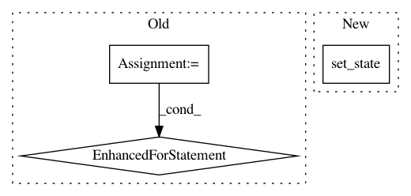

5dd2b15292dbe0b8d1185a9e6dcbb588d38c9cfe,flow/envs/base_env.py,Env,setup_initial_state,#Env#,210
Before Change
self.colors = {}
key_index = 1
color_choice = np.random.choice(len(COLORS))
for i in range(self.vehicles.num_types):
self.colors[self.vehicles.types[i][0]] = \
COLORS[(color_choice + key_index) % len(COLORS)]
key_index += 1
// add missing traffic lights in the list of traffic light ids
tls_ids = self.traci_connection.trafficlights.getIDList()
for tl_id in list(set(tls_ids) - set(self.traffic_lights.get_ids())):
self.traffic_lights.add(tl_id)
After Change
for veh_id in self.vehicles.get_ids():
// some constant vehicle parameters to the vehicles class
self.vehicles.set_state(
veh_id, "length",
self.traci_connection.vehicle.getLength(veh_id))
self.vehicles.set_state(veh_id, "max_speed", self.max_speed)
// import initial state data to initial_observations dict
self.initial_observations[veh_id] = dict()
In pattern: SUPERPATTERN
Frequency: 3
Non-data size: 3
Instances
Project Name: flow-project/flow
Commit Name: 5dd2b15292dbe0b8d1185a9e6dcbb588d38c9cfe
Time: 2018-02-01
Author: akreidieh@gmail.com
File Name: flow/envs/base_env.py
Class Name: Env
Method Name: setup_initial_state
Project Name: senarvi/theanolm
Commit Name: 360ed9d9b6a8f25e8ec1302b523ca3dcc97c6f02
Time: 2016-12-06
Author: seppo.git@marjaniemi.com
File Name: theanolm/network/network.py
Class Name: Network
Method Name: set_state
Project Name: GPflow/GPflowOpt
Commit Name: 70e4d8aee5070b3b6fdf7e4739b42178a2d34f28
Time: 2017-05-05
Author: joachim.vanderherten@ugent.be
File Name: GPflowOpt/acquisition.py
Class Name: Acquisition
Method Name: _optimize_all